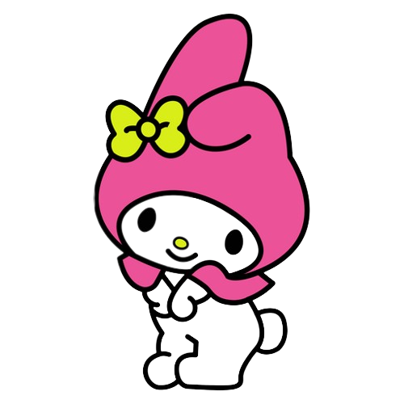
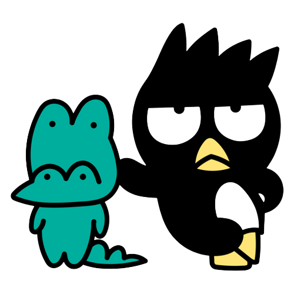

A Hello Kitty é uma garota feliz e divertida, que adora espalhar alegria pelo mundo. Ela mora com seus pais e sua irmã gêmea, Mimmy,em Londres, na Inglaterra. Seu lema é: “Muitos amigos nunca são demais!” Por isso, ela está sempre cercada de amigos e adora fazer novas amizades.
Kuromi é muito bagunceira e sempre causa confusões. Por trás de sua aparência radical, ela é super feminina. Adora escrever em seu diário e ler romances. Sua cor preferida é a preta. Ela é amiga da My Melody, mas encara essa amizade com uma certa competição.

A My Melody nasceu na floresta de Mary Land. Ela é super legal e faz amizade facilmente. Sua marca registrada é um lindo capuz. My Melody parece um coelho e sempre usa um capuz vermelho ou rosa, foi o primeiro personagem de um coelho lançado pela Sanrio.

O Badtz-Maru é um pinguim muito radical, que curte a sua vida “bem humorada” em Gorgeoustown. Ele atrai muita atenção quando anda com seu jacaré de estimação, o Pochi. E, também toca violino e piano, mas só finge, pois não é muito bom nisso